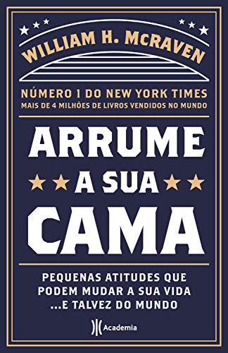
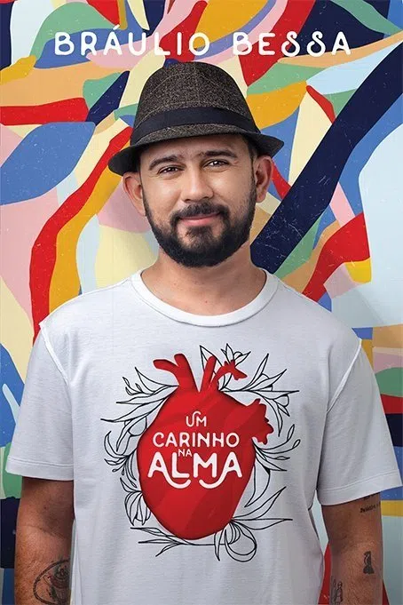
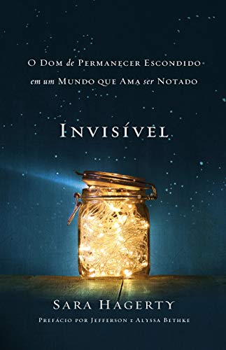
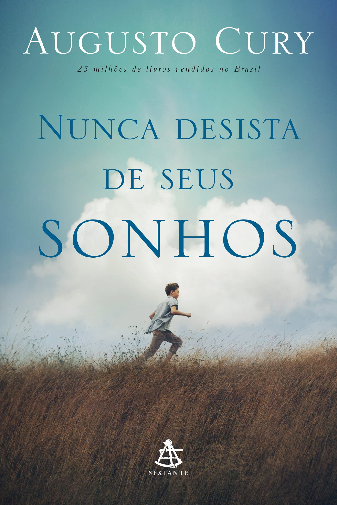

Meu nome é Marcos Antonio, tenho 20 anos e sou natural de Timbaúba, interior de Pernambuco.
Sou estudante de Sistemas de Informação no Cin - UFPE, mas fui estudante de Engenharia da Computação. No incío do ano, realizei
transferênia interna de um curso para o outro.
Sou alguém que gosta de praticar atividades física, viajar, andar de moto e estar com os amigos. Também, gosto muito
de tecnologia e me considero alguém empenhado naquilo que faço. Tenho muita paixão pelas coisas que acredito, por isso sempre
me envolvo 100% naquilo que me comprometo.

Arrume sua cama
Arrume sua cama
Josh McDowell

Um carinho na alma
Um carinho na alma
Bráulio Bessa

Invisível
Invisível
Sarah Hangerty

Nunca desista dos seus sonhos
Nunca desista dos seus sonhos
Augusto Cury


A bússola representa direção, destino e caminho.
Por isso digo que ela me representa. Ela signfica a direção que tenho seguido,
os caminhos que tenho traçado e percorrido.
Costumo dizer que "O que era bagunça, virou direção".